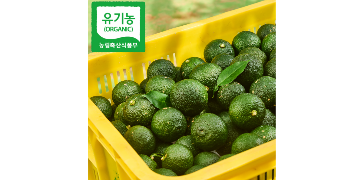
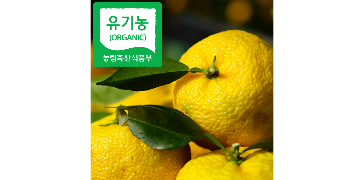

순수유자 컬렉션
자연의 정직함만을 담은 라인업
홈페이지에서 직접 주문하시면 10% 할인해 드립니다
유자 생과
청 담그기 좋은 무세척 유기농 생과. 수확 시기에 맞춰 순차 오픈합니다.
생과도 홈페이지에서 직접 주문하시면 10% 할인해 드립니다

유기농 청유자 생과
덜 익은 풋유자 · 청 담그기용 무세척 생과

유기농 유자 생과
완숙 유자 · 청 담그기용 무세척 생과 (예약 접수중 · 11월 중순 출하 예정)
순수유자 캘린더
유자 농가의 월간 생육 현황
월별 달력에 마우스를 올리시면 상세 일정이 나타납니다.

순수유자가
유기농 유자를 고집하는 이유
대를 이어 가꾸어 온
유자밭의 정직한 시간
-
42년의 유산
고흥에서 나고 자란 아버지가 42년째 홀로 일궈온 유자밭이자, 그중 17년은 유기농으로 지켜온 시간입니다.
-
청년 농부의 대물림
서울살이를 접고 돌아온 아들이, 아버지의 손끝에서 농사를 하나씩 배워갑니다.
-
미래로의 약속
언젠가 저희 아이들에게도, 지금과 같은 유자밭을 물려주고 싶습니다.

인증받은 안전함, 직접 확인하세요
유기농 인증
17년 유기농의 정직함
잔류농약 성적서
검출 농약 0%의 안심
저탄소 인증
지구를 살리는 무해함
유기농업 자격증
검증받은 기술
자주 묻는 질문
순수유자에 대해 궁금하신 점을 해결해 드립니다.
네, 안심하고 드셔도 됩니다. 17년 유기농법으로 자란 유자는 거친 해풍과 자연을 견디며 스스로를 지킨 흔적(검은 점 등)을 남깁니다. 오히려 이런 부분에 유효 성분이 더 풍부하게 함유되어 있으니 안심하고 드세요.
평일 오후 1시 30분 이전 주문 완료 건은 당일 발송되어 대부분 다음 날 수령 가능합니다. 발송 시 송장 정보가 문자 혹은 알림톡으로 전송됩니다.
방부제나 첨가물이 전혀 들어가지 않은 유기농 수제청이므로 개봉 후에는 반드시 냉장 보관해 주시고, 침이나 물기가 묻지 않은 깨끗한 스푼을 사용하여 2주 이내에 드시는 것을 권장합니다.
| 상품명 | 순수유자 디 오가닉 / 로우슈가 | 용량 및 중량 | 500g (전 라인업 동일) |
|---|---|---|---|
| 식품 유형 | 액상차 | 개봉 후 권장기간 | 냉장 보관 시 2주 이내 권장 |
| 유통기한 | 제조일로부터 24개월 (별도 표기일까지) | 유통전문판매원 | 영농조합법인 순수 |
| 제조원 | (주)와이케이컴퍼니 / 티디바인 주식회사 | 원재료명 및 함량 |
디 오가닉: 유기농 유자 50% (국내산, 전라남도 고흥), 유기농 설탕 50% (태국산) 로우슈가: 유자당절임[유기농유자 50% (국내산, 전라남도 고흥), 알룰로오스], 아미드펙틴, 스테비올배당체(감미료) |
🚚 당일 배송 및 발송 안내
평일 오후 13시 30분 이전 주문 및 결제 완료 건은 당일 발송되어 다음 날 도착합니다 (주말 및 공휴일 제외).
13시 30분 이후 결제 건은 익일 발송됩니다. 배송은 지역 택배사 사정에 따라 1~2일 정도 차이가 있을 수 있습니다.
🔄 교환 및 반품 안내
제품 수령 후 7일 이내에 고객센터로 접수된 건에 한하여 교환/반품이 가능합니다.
제품을 보내실 때에는 받으신 패키지와 택배 박스 그대로 포장하여 반송해 주셔야 합니다. 수제 유자청 특성상 제품이 이미 개봉되었거나 용기가 훼손된 경우에는 교환/반품이 불가합니다.
📞 고객센터 및 운영시간
대표번호: 010-8842-9670 | 이메일: tndls669@naver.com
운영시간: 평일 09:00 ~ 18:00 (주말 및 공휴일 휴무) | 점심시간: 12:00 ~ 13:00
사물의 참모습에 다다르면
결국 단순함으로 귀결된다.
— 콘스탄틴 브란쿠시